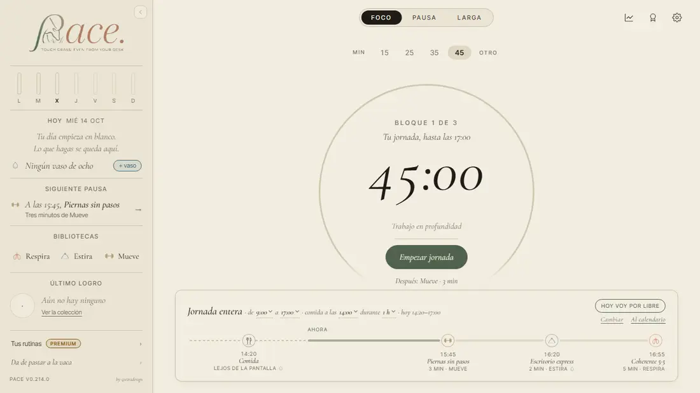
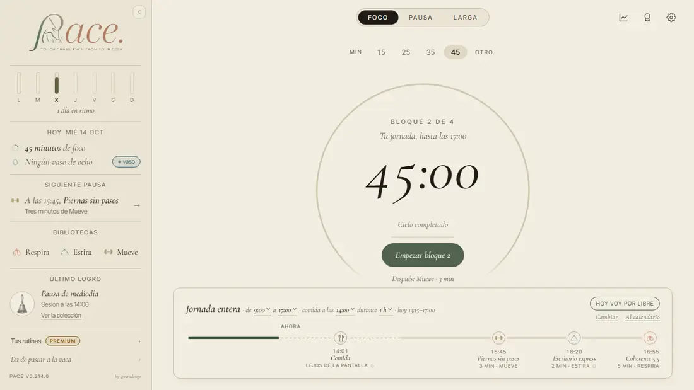
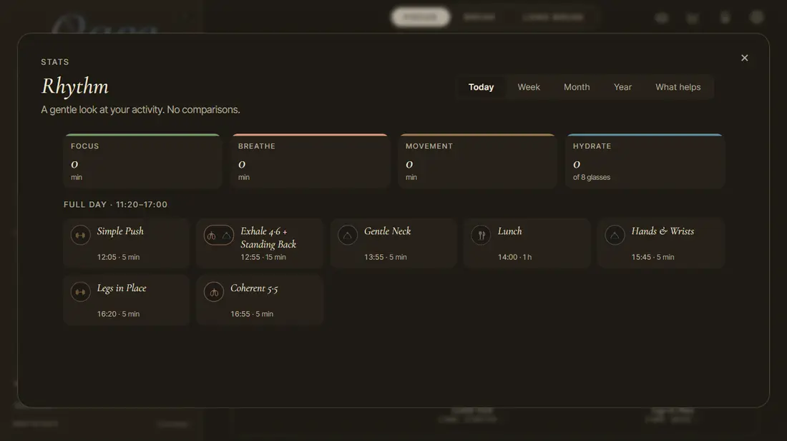
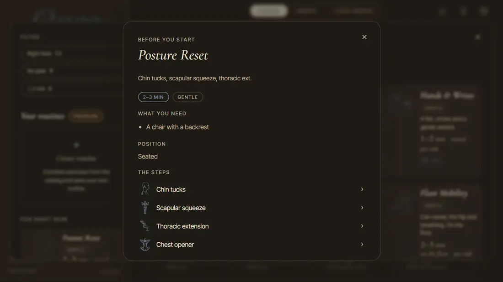

Caza en la web del ordenador
22 nov. 2026, sobre la 0.214.0. Rama claude/caza-web-22nov-829743. Siete hallazgos: uno arreglado, cinco esperan tu letra y uno es solo una nota. De más grave a más leve.
Al día con tus letras (22 nov.): 2A, 3A, 4A y la 5A corta («Sin rachas que castigan»), montadas en la rama con su prueba, que cae en main. La 1, sin montar: su maqueta nueva, con recortes del aro y la línea, en comida/. Ojo con la 4A: en inglés, a 360 px, la línea de la tarjeta llena 201 de 206 px; en Linux puede pasar a tres líneas, sin cortarse.
1 · En plena comida, el aro invita a empezar y se come la comida
Si eliges «Jornada entera» a las 14:20 (o vuelves a esa hora con el día ya servido), la comida va de 14:20 a 15:00, como dijiste el 22 oct. (la B: «la comida hasta las 15:00 y el foco desde entonces»). Pero el aro dice «Bloque 1 de 3 · 45:00 · Empezar jornada», y la línea pone «AHORA» en el bloque de las 15:00, no en la comida. Si pulsas, empieza un bloque de 45 min hasta las 15:05 y la comida desaparece del día. Si llegas a la comida acabando un bloque y pulsas «Ahora no», «AHORA» sí va en la comida, pero el aro sigue ofreciendo «Empezar bloque 2».


Mientras dura, el aro dice «Comida · hasta las 15:00» y el botón verde es «Empezar ya el bloque 1», bajado a enlace como en la pausa. «AHORA» va siempre en la comida. Quien ya comió sigue teniendo «no comes» en la frase.
«AHORA» va en la comida en los dos casos, y el aro se queda como está. Más pequeño, pero el botón sigue invitando a saltarse la comida.
Prueba: caen-en-main.spec.js, H1 (cae en main: «AHORA» en la posición 34 de la línea, la comida en la 6; tras pulsar, c14:20+0).
2 · Estadísticas › Hoy dice otros minutos que la línea del día
Para la misma pausa, la línea del día dice «Empuje sencillo · 2 min · Mueve» y la columna «Dos minutos de Mueve», pero Estadísticas › Hoy dice «12:05 · 5 min»: son los minutos del hueco, no los de la rutina. Pasa en todas las pausas que aún no han llegado.

«12:05 · 2 min», como la línea y la columna. La pausa larga sigue con sus 15.
El hueco entero, que es el tiempo que la jornada reserva.
Prueba: caen-en-main.spec.js, H2 (cae en main: «Empuje sencillo 12:05 · 5 min»).
3 · La miniventana, al acabar la pausa de la jornada, se queda en «45:00» sin nada que hacer
Con la jornada, la tira dice bien el bloque y la pausa. Cuando la pausa acaba, enseña «45:00 · Foco · Bloque 2 de 9» quieta y sin botón: parece un Foco en pausa. Por libre, al acabar dice «Foco terminado · Vuelve a PACE para tu pausa · Volver». Comprobado con la miniventana de verdad de Chromium (sin pantalla), en castellano y en inglés.
Como por libre: «Pausa terminada · Vuelve a PACE para el bloque 2» con «Volver», que trae la pestaña delante.
Un botón que hace lo mismo que el del aro, sin volver a PACE. Más cómodo, pero empieza el bloque sin ver la home.
4 · «Recolocar la postura»: el inglés abreviado y «tres gestos» con cuatro pasos
En inglés, la ficha dice «Chin tucks, scapular squeeze, thoracic ext.», con la abreviatura a medias. En castellano dice «Barbilla, omóplatos y pecho. Tres gestos contra la silla.», y la rutina tiene cuatro pasos (el runner dice «Paso 1 de 4»).

«Barbilla, omóplatos y pecho. Cuatro gestos contra la silla.» y «Chin, shoulder blades and chest. Four moves against the chair.»
«Chin, shoulder blades and chest. Three moves against the chair.», como el castellano de hoy.
5 · La bienvenida dice «Sin gamificación» y PACE tiene sellos
La primera pantalla dice «Sin gamificación ni notificaciones abrumadoras». PACE tiene una colección de sellos y «1 día en ritmo». La landing lo dice mejor: «Sellos de libreta de campo, sin rachas que castigan». Supongo que alguien que lo note lo leerá como una promesa que no se cumple.
Dice lo mismo que la landing, y es verdad. En inglés: «No streaks that punish you, no overwhelming notifications».
Se entiende como «nada de gamificación agresiva».
6 · Con un lector de pantalla, la app no tenía ningún encabezado
Con NVDA o VoiceOver se salta de encabezado en encabezado. En la app no había ninguno (los de la landing están, pero ocultos). Ahora hay uno, «PACE · Foco · Cuerpo», que no se ve. No cambia nada a la vista. Prueba nueva: tests/home-encabezado.spec.js; cae en main y pasa en la rama. Commit 3b71f1d1.
7 · /premium y /beta en inglés bajan antes las capturas en castellano
La página cambia las imágenes al inglés cuando ya ha empezado a bajar las de castellano (dos en /premium y dos en /beta). No se ve nada raro: solo se gastan unos cientos de KB. Se arregla eligiendo la imagen antes de que el navegador la pida. No lo he montado: es poco y toca las pruebas de esas páginas.
Revisado y bien
- La home en nueve momentos (primera vez, sin plan, la pregunta, el día servido a las 9:00 y a las 11:20, la comida, el cierre, por libre y la pausa abierta) a 1280×720, 1366×768, 1536×864 y 1920×1080, y al 125 % en 1366 y 1920; en castellano y en inglés, en crema y en oscuro: 216 pantallas, ninguna con scroll, desborde ni error de consola.
- El Foco: empezar, pausar, recargar en pausa, seguir, cambiar los minutos a mitad (pregunta antes), recargar corriendo y llegar al final con la pausa que propone.
- Mueve, Estira y Respira de principio a fin con «Auto» encendido, a 1280×720 y al 125 % en inglés y oscuro; Hidrátate.
- Cada ventana de la home (estadísticas, logros, Ajustes, el sobre, «Da de pastar a la vaca», «Tus rutinas», las horas del día, «Al calendario»): el foco entra, el Tab no se escapa, Escape cierra y el foco vuelve a su botón.
- El Tab por la home: cada parada con su anillo de foco.
- La bienvenida, «¿Cómo es tu semana?» y la entrada a la visita guiada, en castellano a 1920 y en inglés al 125 %.
- La miniventana por libre: cuenta, pausa y «Foco terminado».
- La landing, /premium, /beta, /gracias, /recuperar, /desistir, /privacy y /safety, a 1280 y 1920, en las dos lenguas y los dos temas: sin errores, sin imágenes rotas, sin enlaces internos rotos. (Las llamadas a
/api/*dan 404 en local porque son funciones de Cloudflare.)
Sin mirar a fondo
Por el uso de la cuenta: la carta del lunes y el sobre con novedades viejas (las pruebas ya los miden), cada interruptor de Ajustes, conectar el calendario, «Auto» apagado de principio a fin y la medida en Linux. Nada de lo propuesto mueve textos largos, así que no pide medir en Linux salvo la letra A del 1 si se monta.